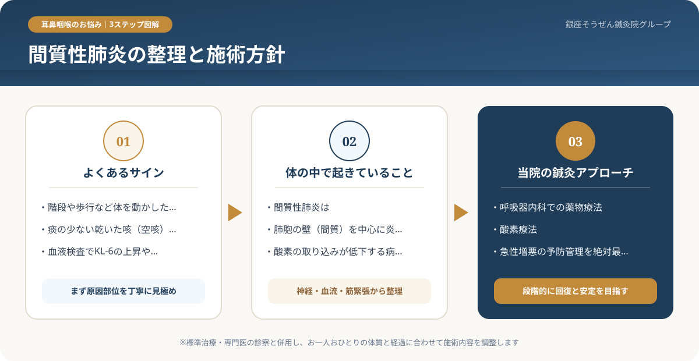

間質性肺炎の鍼灸
肺の間質に炎症や線維化が起こる疾患の総称です。呼吸器内科の標準治療と急性増悪予防を最優先とし、安定期・主治医許可下でのみ補完ケアを行います。
まず知っておきたい要点と改善の流れ

間質性肺炎は、肺胞の壁（間質）を中心に炎症や線維化（硬くなる変化）が起こり、酸素の取り込みが低下する病気の総称です。関節リウマチなどの膠原病、粉塵・カビの吸入、薬剤、感染症などが原因となるほか、原因不明の特発性間質性肺炎もあります。完治が難しいケースが多いため、呼吸器内科での抗線維化薬・ステロイド等の薬物療法、呼吸リハビリ、酸素療法による進行抑制が最優先です。
このようなお悩みはありませんか？
- ✓階段や歩行など体を動かしたときの息切れが徐々に強くなっている
- ✓痰の少ない乾いた咳（空咳）が長期間続いている
- ✓血液検査でKL-6の上昇や、関節リウマチなど膠原病の合併を指摘された
- ✓呼吸器内科で安定管理中だが、咳による胸背部のこわばりや疲れを和らげたい
当院の施術アプローチ・改善の流れ
なぜ鍼灸で改善へ向かうのか？（作用機序の図解）
間質性肺炎に対する鍼灸は、耳周囲・頸部の微小循環改善と聴覚・粘膜調整機序を通じて、お体本来の回復力を引き出します。

翳風・風池・合谷など、耳鼻咽喉領域の神経・血管と連動する経穴へ繊細にアプローチします。
首・顎まわりの深層筋緊張を緩め、内耳や粘膜周囲の滞った血流とリンパ循環を促します。
ストレスや睡眠不足で高ぶった交感神経を鎮め、音への過敏反応や粘膜の過剰反応を和らげます。
標準治療を妨げない設計で、生活支障度（THI等）の軽減と再発しにくい体調づくりを支えます。
院長YouTube解説・関連動画
1番多いと言われている原因は、関節リウマチなどの膠原病
間質性肺炎の原因は多岐にわたります。
・自己免疫疾患
リウマチ、全身性硬化症、多発性硬化症などの自分の免疫細胞が自分の肺を傷つけてしまう病気が原因となることがあります。
・環境因子
ほこり、かび、薬物などが原因となることがあります。
・感染症
ウイルスや細菌によっても間質性肺炎は発症します。
・特発性
原因が特定できない場合もあり、この場合特発性間質性肺炎と呼ばれます。
・特発性肺線維症（IPF）
特発性肺線維症は間質性肺炎の中でも最もよく知られたタイプであり、特定の原因がないまま線維化が進行していく病気です。中高年男性に多く見られ、喫煙歴が影響を与えると考えられています。
・接触性肺炎
塵肺やアスベスト肺とも呼ばれるこのタイプの肺炎は、特定の粉塵や繊維に長期間さらされることで発症する可能性があります。
・薬剤性肺炎
一部の薬剤が原因となり、肺に炎症を引き起こすことがあります。抗がん剤や心臓の病気の薬剤、一部の抗生物質や抗炎症薬がこれに該当します。
・全身性の病気に伴う間質性肺炎
ループスや関節リウマチ、シェーグレン症候群といった全身性の自己免疫疾患が原因で間質性肺炎が発症することがあります。
・感染性肺炎
細菌やウイルス、真菌の感染が原因で発症することもあります。
・遺伝的要因
家族に間質性肺炎の人がいる場合、遺伝的な要因により発症リスクが高まることがあります。
間質性肺炎の症状は息切れと咳
間質性肺炎は肺の間質部分に炎症が生じる病気です。間質は肺の構造を支える結合組織で酸素と二酸化炭素が交換される重要な場所です。この炎症により肺の柔軟性が失われ、呼吸が苦しくなってしまうのです。
初期段階の症状は軽度であることが多いため、特に問題はありません。しかし、徐々に悪化することがあります。
（例）初めは、階段を上っている時や荷物を持った時に息切れを感じるようになりますが、病気が進んでいくと、部屋の中で移動した時や服を着たり脱いだりした時にも息切れを感じるようになります。
主な症状は息切れ、乾いた咳、疲労感、胸の痛みで、基本的に呼吸を担当するエリアの問題が起こります。
息切れなどは特に運動時や階段を上るときに感じることが多く、乾いた咳は長期間続くことがあります。人にもよりますが、疲労感によって日常生活が困難になる人もいます。中には胸の痛みが強く出る人もいます。
間質性肺炎では、咳は現れますが痰は現れません。間質性肺炎の症状は少しずつ進みます。そのため、症状をあまり重く考えないケースも多いです。多くの場合は、特に症状がなく、胸部のレントゲンやCTの異常で間質性肺炎であることが発見されていると言われています。
間質性肺炎では、症状が悪くなると、安定器よりも肺機能が下がり、息切れが悪化し、咳が増えます。他にも、発熱や頻脈、倦怠感や疲労感、不眠などの症状が見られることも多いです。
病気が進むと、さらに肺が縮み、肺の一部が線維性成分の固まりになって繊維性成分の固まりになった部分は肺としての機能をしなくなります。すると、血液中の酸素が足りなくなり、日常生活にも影響が現れます。
・呼吸困難
間質性肺炎の最も一般的な症状は呼吸困難です。炎症や線維化が進行することで肺の伸縮性が失われ、酸素の取り込みが難しくなります。初めは運動時のみに呼吸困難を感じることが多いですが、病状が進行すると安静時にも呼吸困難が現れるようになります。
炎症や線維化により気道が刺激されると、せきが引き起こされることがあります。せきは通常乾いたせきで、痰を伴わないことが多いですが、場合によっては痰が出ることもあります。
呼吸時にヒューヒュー、ゴーゴーといった音が聞こえることがあります。これは肺の線維化により気道が狭くなることで引き起こされる現象です。
間質性肺炎では、胸部に痛みを感じることがあります。胸痛は通常軽度で、日常生活に大きな影響を与えることは少ないですが、場合によっては激しい痛みを感じることもあります。
・疲労感
肺の機能が低下すると、身体が十分な酸素を取り込めなくなり、疲労感が現れることがあります。疲労感は慢性的に続くことが多く、日常生活に影響を与えることがあります。
・体重減少
間質性肺炎では、病状が進行すると体重が減少することがあります。これは食欲不振が原因であることが多いですが、時には栄養の吸収不良が原因であることもあります。
・その他の症状
頻脈、肺高血圧、心不全、肺の感染症、皮膚の変化（紫色になるなど）。
間質性肺炎の改善方法は、薬
間質性肺炎の改善方法は、薬です。間質性肺炎の種類や発症した人の状況に合わせていくつかの薬を組み合わせて改善に取り組むこともあります。
薬を使うだけではなかなか改善しない場合は、現れている症状に合わせて呼吸リハビリテーションを行ったり、酸素を吸入したりします。
病気が進むスピードがかなりゆっくりである場合は、経過観察を行うだけのこともあります。
今のところ、ほとんどの間質性肺炎は完全に改善することはありません。間質性肺炎は、病気とうまく付き合って生活することが大事なのです。
1. 薬
間質性肺炎の改善において最も一般的な方法は薬です。
ステロイド：ステロイドは、間質性肺炎に伴う炎症を抑えるために使用されます。プレドニゾロンなどのステロイドがよく用いられます。ステロイドの効果は個人差があり、一部では効果が期待できる一方で、他では効果が限定的である場合があります。
免疫抑制剤：免疫抑制剤は、ステロイドと併用することで、ステロイドの量を減らすことができる場合があります。免疫抑制剤には、アザチオプリンやシクロスポリンなどがあります。
抗線維化薬：ピルフェニドンやニンテダニブは、間質性肺炎の線維化を抑制する薬です。これらの薬は、病状の進行を遅らせる効果が期待できます。
2. 酸素
進行した間質性肺炎では、酸素の取り込みが難しくなるため、酸素での改善が必要になる場合があります。この方法は生活の質を改善するための重要な方法の一つです。
3. リハビリテーション
リハビリテーションは、呼吸機能の改善や維持、疲労感の軽減を目的として行われます。リハビリテーションには、運動や呼吸リハビリテーションなどがあります。
4. 介入法
間質性肺炎に伴う合併症の改善として、介入法が行われることがあります。例えば、肺高血圧がある場合には、血管拡張薬による改善が行われることがあります。
5. 肺移植
進行した間質性肺炎で薬や他の方法が効果がない場合には、肺移植が最後の選択肢となる場合があります。肺移植は、その効果が大きい一方で、移植後の拒絶反応や感染症などのリスクがあります。
6. 生活習慣の改善
喫煙や過度な飲酒、過重な運動は肺の機能を悪化させる原因となります。したがって、これらの生活習慣の改善が重要です。また、バランスの取れた食事が重要です。
1. ステロイド
名前：プレドニゾロン、メチルプレドニゾロンなど
使用場面：ステロイドは間質性肺炎による炎症を抑制するために用いられます。主にサルコイドーシスや過敏性肺炎、薬剤性肺炎などの改善に用いられることが多いです。
2. 免疫抑制剤
名前：アザチオプリン、シクロスポリン、ミコフェノレートモフェチルなど
使用場面：免疫抑制剤はステロイドと併用することで、ステロイドの量を減らすことができる場合があります。サルコイドーシスや過敏性肺炎などの改善に用いられることがあります。
3. 抗線維化薬
名前：ピルフェニドン、ニンテダニブ
使用場面：抗線維化薬は、肺の線維化を抑制することで、病状の進行を遅らせる効果が期待できます。特に特発性肺線維症の改善に用いられます。
4. 非ステロイド性抗炎症薬（NSAIDs）
名前：イブプロフェン、ナプロキセン、セレコキシブなど
使用場面：NSAIDsは痛みや炎症を軽減するために用いられることがあります。
5. 抗菌薬
名前：トリメトプリム/スルファメトキサゾール（Bactrim）、アジスロマイシンなど
使用場面：感染症が合併している場合や、感染症の予防のために使用されます。
6. 抗ウイルス薬
名前：アシクロビル、オセルタミビルなど
使用場面：ウイルス感染症が合併している場合や、ウイルス感染症の予防のために使用されます。
間質性肺炎の判断に重要なKL−6
KL−6は、糖鎖抗原の一種で間質性肺炎の活動性を評価するための重要な指標の1つになります。MUCと呼ばれる糖タンパク質の1種で肺の上皮細胞や腺細胞から分泌されます。
KL−6は間質性肺炎などの肺疾患で血中濃度が上昇することが知られています。これは、肺の上皮細胞が損傷、炎症が起こると血中に放出されるためです。よって、KL−6の濃度は肺の間質、上皮細胞の損傷や炎症の程度を反映します。
特に判断や活動性の評価、改善の効果のモニタリングに使われます。調べる方法は、血液を調べることです。静脈から血液サンプルを摂取し酸素免疫測定法でKL−6の値を見ていきます。
KL−6の正常値はおおよそ500u/ml以下です。具体的な基準は機関によって違いますが、軽度上昇は500〜1000u/ml、中等度上昇は1000〜2000u/ml、高度上昇は2000u/ml以上と言われています。KL−6の値が高いほど、間質性肺炎などの活動性が高い可能性があります
KL−６は、鍼灸で下げることが可能です。
・肺がん
・サルコイドーシス
・慢性閉塞性肺疾患
鍼灸とKL-6
間質性肺炎で当院に来院している方は現在５名です。
その中の1人はKL-6が1500u/mlまで上がりましたが、鍼灸によって1000を切って現在は900u/mlまで下がっています。この方は80代の人のため、あまり年齢によって回復できないなど年齢の差はありません。
他の４名は500u/ml以下ですが、悪化させたくないために月1回来院しています。
KL−６は鍼灸で下げることができます。これは、鍼灸をすると脳が傷つけられたと認識して鍼をしたところの回復力が増すためです。
間質と上皮細胞の中で起きている炎症があったとして、炎症が鍼によって止まってしまえばKL−６も下がります。
何が原因で炎症が起きているのかを判断することが必要ですが、当院では特発性の人がほとんどのため、肺の炎症がおさまれば力になれるという認識のもとで鍼灸でのアプローチを行っています。
間質性肺炎は鍼灸の見せ所です。多くの人が呼吸しにくい状態になっていたり慢性的な息切れや咳、だるさに苦しめられています。
福島県の医大で教授をしている鈴木教授は、鍼灸師でもあります。鈴木教授は、慢性閉塞性肺疾患に対する鍼灸の有効性をまとめた論文を発表しています。それほど、肺疾患に関して鍼灸は非常に有効なのです。
肺兪と三焦兪にせんねん灸をすることです。自分で行うにはなかなか難しい場所ではありますが、家族などに行ってもらうと良いでしょう。
肺の機能を促進させ、刺激すると肺の再生力が上がり元の機能を取り戻しやすいとされているツボです。
・三焦兪
炎症症状がベースになるため、炎症を止めなければいけません。炎症を止める糖質コルチコイドというホルモンがあります。炎症を止めるためにはこのホルモンをたくさん分泌させなければいけないため、副腎皮質というエリアに刺激を与えていかなければいけません。そのために役立つツボです。
突発性難聴・耳管不調・顎関節症のツボ図解
実際の施術ではお一人おひとりの体質・症状に合わせて選穴しますが、突発性難聴・耳管開放症/狭窄症・顎関節症・食いしばりのケアの臨床でよく用いられる代表的なツボの目安です。

📌 代表的なツボの詳細一覧表を開く（6穴） ▼
| ツボ名 | 位置の目安 | 主な狙い | セルフケアの注意点 |
|---|---|---|---|
| 耳門（じもん） | 耳の穴の前上、口を開けるとくぼむ上部 | 耳鳴り・耳閉感・側頭部の緊張緩和 | 突発性難聴は発症48時間以内の耳鼻科受診が最優先です。 |
| 聴宮（ちょうきゅう） | 耳の穴の真ん中の前、口を開けるとくぼむ所 | 内耳の微小循環・聴覚過敏や耳管不調のサポート | 口を軽く開けた状態で優しく触れます。 |
| 聴会（ちょうえ） | 耳たぶの付け根の前、口を開けるとくぼむ下部 | 耳周囲と顎関節の連動緊張を和らげるツボ | 強く押し込まず心地よい範囲で刺激します。 |
| 翳風（えいふう） | 耳たぶのすぐ後ろのくぼみ | 内耳循環と自律神経（迷走神経枝）の調整 | 耳周囲の冷え対策に蒸しタオルも有効です。 |
| 下関（げかん） | 耳の前、頬骨のアーチの下のくぼみ（顎関節部） | 顎関節症・食いしばり・咬筋のこわばり緩和 | 口を開閉して痛みが出る場合は無理に動かさず優しく押します。 |
| 中渚（ちゅうしょ） | 手の甲、薬指と小指の骨の間（拳のくぼみ） | 三焦経の要穴として耳の不調を遠隔から整えるツボ | 耳に触れにくい急性期でも安全に使える遠隔穴です。 |
国際査読論文の科学的エビデンス
国際的な医学データベース（PubMed・Cochrane等）で報告されている突発性難聴・耳管開放症/狭窄症・顎関節症・食いしばりのケア領域の代表的な査読済み鍼灸研究をまとめています（標準治療との併用や研究上の限界を含めて正確に掲載）。
📚 査読論文データ・PubMed出典リンクを開く（4件） ▼
| 年・研究デザイン | 対象・規模 | 主な結果 | 限界・出典 |
|---|---|---|---|
| 2013年 大規模多施設RCT | 季節性アレルギー性鼻炎 422名（ドイツ） | 7〜8週のRQLQ QOLがシャム比0.5点・薬単独比0.7点改善（P<0.001）、頓用薬使用も有意減少（P<0.001）。 | 1年目16週では群間差消失、臨床的意義は慎重評価。 Ann Intern Med (PMID: 23420231) |
| 2021年 メタ解析 | 耳鳴り 8 RCTs（n=504） | 生活支障度THI（MD -10.11, p<0.001）・TSI（MD -8.36, p<0.001）が有意改善。VASは有意差なし（p=0.06）。 | 組入れRCTの質・サンプル規模に限界あり。 Acupunct Med (PMID: 32772848) |
| 2026年 ネットワークメタ解析 | 突発性難聴 36研究（n=3,360・標準治療併用） | ステロイド等の標準治療への鍼灸併用で総有効率RR 1.19（p<0.0001）、3週間コースが推奨。 | エビデンス確実性は低く標準治療（早期ステロイド）併用が前提。 Complement Ther Med (PMID: 42918509) |
| 2023年 メタ解析 | 成人顎関節症 22 RCTs統合（n=471） | 標準治療併用で有効率RR 1.36・疼痛VAS MD -1.23と有意改善。 | GRADE確実性は低〜非常に低、さらなる高品質RCTが必要。 Medicine (PMID: 37746950) |
参考文献・出典
- 2013年 大規模多施設RCT（季節性アレルギー性鼻炎 422名（ドイツ））— Ann Intern Med (PMID: 23420231)
- 2021年 メタ解析（耳鳴り 8 RCTs（n=504））— Acupunct Med (PMID: 32772848)
- 2026年 ネットワークメタ解析（突発性難聴 36研究（n=3,360・標準治療併用））— Complement Ther Med (PMID: 42918509)
- 2023年 メタ解析（成人顎関節症 22 RCTs統合（n=471））— Medicine (PMID: 37746950)
よくある質問（FAQ）
Q. 間質性肺炎の線維化を鍼灸で治すことはできますか？▼
Q. 急に息苦しさや咳が増えたときは施術を受けられますか？▼
あわせて読まれる関連疾患（耳鼻咽喉のお悩み）
ある日突然片耳などが聞こえにくくなる感音難聴です。発症早期の耳鼻科ステロイド治療を最優先に、早期併用や回復期の耳鳴り・めまいをケアします。
実際には音がないのに耳の中で雑音が聞こえる状態です。耳の血流や自律神経・脳の過敏さを整えるケアで軽減を目指します。
肺胞壁が徐々に硬くなり息切れや乾いた咳が生じる指定難病です。呼吸器専門医の治療を最優先に、安定期の呼吸のしやすさと体力を補完的に支えます。
薬の副作用で肺に炎症が起こる疾患です。原因薬の中止と呼吸器内科での治療が絶対最優先（急性期は鍼灸禁忌）で、回復期の体調管理のみ補完的に行います。
喫煙などの有害物質で気道や肺が傷むCOPD。禁煙と呼吸器専門医管理を最優先に、安定期・主治医許可下で呼吸のしやすさを支えます。
細気管支の炎症・狭窄で息苦しさが続く指定難病。呼吸器専門医の治療を最優先に、安定期・主治医許可下で穏やかに体調を整えます。
CLINICAL RECOVERY CASES
✨ 実際の臨床改善事例・回復経過を見る
銀座本院をはじめ各院での実際の改善事例を症状別に絞り込んでご確認いただけます。
おひとりで悩まず、まずはご相談ください
銀座本院・川口・大宮・横浜・博多・田無の各院でご予約を承っております。